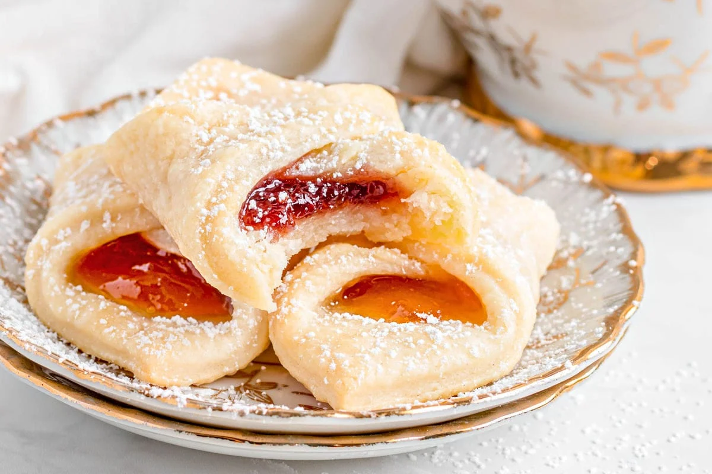

Kolaczki

Description
A type of sweet pastry that holds a portion of fruit surrounded by puffy dough.
Made with a cream cheese dough that bakes buttery and flaky, the Kolaczki is often folded in a diamond shape.
Popular fillings include apricot, raspberry, almond, and sweet cheese.
Ingredients
- 8 ounces cream cheese (room temp)
- 1 1/2 cups salted butter (room temp)
- 3 cups all-purpose flour
- Granulated sugar (for rolling out dough)
- Confectioners' sugar (for rollong out dough)
- 8-10 ounces pastry filling (raspberry, apricot, etc.)
- 1 large egg white
- 1 cup sifted confectioners' sugar
Steps
- In a large bowl, beat cream cheese with butter until light and fluffy.
- Add the flour, 1 cup at a time, and mix well.
- Wrap dough in plastic and refrigerate for at least 1 hour.
- Heat oven to 350 F. Roll out dough to a 12 x 18-inch rectangle—1/4-inch thick—on
a silicone mat or a surface that has been dusted with equal parts confectioners' and
granulated sugars (not flour), because the granulated sugar will act as ball bearings
and help keep the dough from sticking.
- Cut into 2-inch squares. Place 1/2 to 1 teaspoon filling on center of each square.
Brush a tiny bit of beaten egg white on one corner and press the opposite corner on it,
pressing the dough together lightly to seal.
- Using a spatula, transfer the filled cookies to a parchment-lined sheet pan and bake for 15 minutes
or until corners start to brown.
- Using a spatula, remove cookies from the baking sheet and transfer to a wire rack to cool completely
before dusting with confectioners’ sugar.